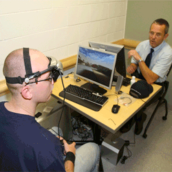

As video games grew in quality and quantity, one facet of
society—education—began to take notice of this new phenomenon. The late
1970s and early 1980s produced a new educational paradigm through the
development of educational video games, i.e. children’s software,
learning games, and edutainment1. By incorporating
gaming and entertainment, educators developed a new software genre to
approach education, and they designed video games that employed “play
as a site of learning." In an attempt to appeal to children,
games like Number Munchers, Oregon Trail, Reader Rabbit, KidPix, and
Where in the World is Carmen Sandiego began the battle between
balancing entertainment with education through a combination of play,
learning, and literacy, i.e. a player’s knowledge1.
Video game researchers and educational designers like Marc Prensky,
James Paul Gee, Clark Aldrich, Tracy Fullerton, Katie Salen, Eric
Zimmerman, Steven Johnson, Aaron Dignan, and numerous others, have
published a number of essays, articles, and books that present,
analyze, synthesize, and critique educational methodologies and
learning stratagems for educational video games, such as digital
game-based learning, behavioral games, and game design fundamentals
2,3,4.
These researchers and designers approach educational video games from
different perspectives and with unique schema; however, their thematic
work understands and uses video games in an educational setting.
Educational video game methodologies vary. On the one hand, there are
elaborate video games that immerse players in a world of challenge
wherein players actively solve problems and reflect over the dynamics
of processes, such as history and politics; on the other hand, there
are ‘brain fitness’ games that provide mini-tasks for players to
practice in a rinse-and-repeat fashion; then there are games that fall
everywhere in between1,5. For
example, the mundane ‘drill and practice’ style of games like Math
Blaster lowers the quality of video game play in order to supply the
acquisition of specific educational content, i.e. sugar coating an
academically rigorous task; this ‘chocolate covered broccoli’ approach
has helped children learn their addition, subtraction, multiplication,
and division, but it merely provides an extrinsic reward for
participating in a rote task1,5.
Conversely, a game like Civilization provides macro and micro concepts
that challenge literacy through situational learning and immersion1.
Games like Civilization and Math Blaster challenge
and explore the perception of ‘good’ vs. ‘bad’ video games and video
game play styles: the value of social and cognitive learning versus
academic content, community learning versus individual development,
methods to acquire transferable skills, and a number of other
educational values and paradigms1.
Educational video games have produced a variety of results: some good,
some bad, and some ugly. In order to understand these results,
educational video games should be approached and understood like any
other process or phenomenon—scientifically. The analytical, empirical,
and pragmatic methodologies that help explain our world can provide
intelligible and instrumental results for video games and video game
play6. Educational video games have been successful and
unsuccessful in many regards; some games, techniques, and learning
strategies work for one individual, but those same aspects and features
may not work for another player. Through a combination of genetic
factors and environmental influences, human beings learn, develop, and
grow in unique ways7,8. It is difficult to
identify the reason(s) as to what, how, or why certain methodologies
work for specific individuals; however, the collection of quantifiable
results produced from video games and video game play research can
provide useful information. That is to say, the direct effects of
educational video games are unpredictable from individual to
individual, but the collective matrix of results can be understood and
utilized for scientists and designers alike.
Under a holistic approach, no discrete instance reflects the whole.
Instead, the aggregate serves as a valuable assessment of the system.
As with educational video games, varying design methodologies have laid
a foundational framework to understand video games and video game play.
A number of educational game design researchers, such as Mizuko Ito,
James Paul Gee, Kurt Squire, Ian Bogost, and David Shaffer among
others, propose a variety of concepts and practices that understand
educational media in intelligible ways—contemplating educational games
to understand their true aesthetical nature—as well as to be
instrumental—producing efficacious results1,6. This
collective work has started to mold
our perception of educational video games, but it needs to be
quantitatively investigated and characterized before it is fired,
fixed, and ready for functional use. Academic fields of psychology,
biology, and cognitive neuroscience have begun glazing and
characterizing video game research, and through these
fields—specifically cognitive neuroscience—video game researchers and
engineers will be able to produce instrumental and intelligible
results.
Sources:
- Ito, M. (2009). Engineering play: A cultural history of children's software. Cambridge, MA: The MIT Press.
- Dignan, A. (2011). Game frame: Using games as a strategy for success. New York, NY: FREE PRESS.
- Salen, K., & Zimmerman, E. (2004). Rules of play: Game design fundamentals. Cambridge, MA: The MIT Press.
- Van Eck, R. (2006). Digital game-based learning: It's not just the digital natives who are restless. Educause. Retrieved from http://net.educause.edu/ir/library/pdf/erm0620.pdf
- Green, C. S., & Bavelier, D. (2012). Learning, attentional control and action video games. Current Biology, 22: 197-206. doi: 10.1016/j.cub.2012.02.012
- Dear, P. (2006). The intelligibility of nature: How science makes sense of the world. Chicago, IL: The University of Chicago Press.
- Dawkins, R. (1976). The Selfish Gene. Oxford, UK: Oxford University Press.
- Weiner, J. (1994). The beak of the finch: A story of evolution in our time. New York, NY: Vintage Books.
| Holistic Gaming | |
|---|---|
| Games & Play  |
Video Games
& Video Game Play  |
Educational
Games |
Learning Tools |
| Physical & Psychological Effects of Video Game Play | |
Brain-Mind
Relationship |
The Good |
The Bad |
The Ugly
Duckling |
| A Future for Holistic Gaming | |
| Research Tools  |
Educational
Value |
| Prevention
& Treatment Strategies  |
A Complete
Systems Learning Game  |